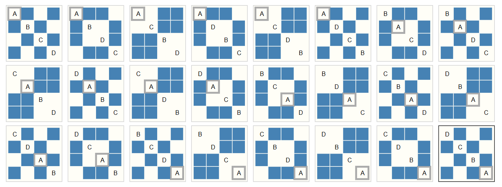

Neural Network Essentials for Understanding GNNs#
1. What Is a Neural Network?#
A neural network is a stack of layers, where each layer applies a linear transformation followed by a nonlinear activation:

Key concepts:
Neuron: linear combination + activation
Layer: collection of neurons
Network: sequence of layers
2. Forward and Backward Propagation#
Forward pass: compute outputs layer by layer.
Backward pass: compute gradients and update parameters.
Why it matters for GNNs:
GNNs also use forward/backward propagation.
Gradients flow through aggregation operations over graph neighbors.
3. Loss Functions#
Loss measures the distance between prediction and target.
Common losses:
Cross Entropy (classification) $\( \mathcal{L}(y, \hat{y})=-(y\log(\hat{y}) + (1-y)\log(1-\hat{y})) \)$
MSE (regression) $\( \mathcal{L}(y, \hat{y})=(y-\hat{y})^{2} \)$
In GNNs, loss depends on the task:
Node classification
Link prediction
Graph classification
4. What Are Embeddings?#
Definition#
An embedding is a dense vector representation of a discrete entity (node, edge, subgraph, or entire graph) in a continuous vector space: $\( h_v \in \mathbb{R}^d \)$ where (d) is the embedding dimension. Embeddings aim to encode structural, attribute, and task-relevant information into a compact numeric form.
Types of Embeddings#
Node embeddings: represent individual nodes (h_v).
Edge embeddings: represent relationships; can be derived from node embeddings (e.g., concatenation, difference, or learned).
Graph embeddings: summarize the whole graph (readout of node embeddings).
Subgraph embeddings: represent a substructure or motif.
What information embeddings capture#
Structural context: e.g., position in the graph, neighborhood structure.
Attributes: node features (text, numeric, categorical) are integrated.
Task-specific signals: class labels or link existence if trained supervisedly.
How embeddings are learned (common objectives)#
Supervised learning: optimize loss on a downstream task (e.g., node classification): $\( \min_\theta \mathcal{L}_{\text{task}}(f_\theta(H), Y) \)$
Unsupervised / self-supervised:
Reconstruction: reconstruct adjacency or features (autoencoders).
Contrastive: maximize agreement of positive pairs (e.g., DGI, GraphCL).
Random-walk-based: learn embeddings so that co-occurring nodes in random walks are similar (DeepWalk, node2vec).
How GNNs produce embeddings (message passing view)#
Initialization: $\( h_v^{(0)} = x_v \quad(\text{or a learnable vector if no features}) \)$
One layer (general form): $\( m_v^{(l)} = \text{AGG}\big(\{ \phi(h_v^{(l)}, h_u^{(l)}, e_{uv}) : u\in\mathcal{N}(v)\}\big) \)\( \)\( h_v^{(l+1)} = \psi(h_v^{(l)}, m_v^{(l)}) \)\( A simple linearized GCN layer: \)\( H^{(l+1)} = \sigma(\widehat{A} H^{(l)} W^{(l)}) \)$ where (\widehat{A}) is a (normalized) adjacency matrix with self-loops.
Practical considerations#
Dimension (d): common choices 32–512. Larger (d) → more capacity but more computation and overfitting risk.
Normalization: unit-normalize embeddings when using cosine similarity.
Aggregation choice: sum/mean/max — affects expressiveness and scale.
Initial features: if no features, use one-hot or learnable embeddings.
Regularization: dropout, weight decay; prevents oversmoothing in deep GNNs.
Interpretability: visualize with t-SNE/UMAP; inspect nearest neighbors in embedding space.
Similarity & downstream use#
Use cosine similarity or dot product to compare embeddings: $\( \text{sim}(h_i,h_j) = \frac{h_i^\top h_j}{\|h_i\|\|h_j\|} \)$
For link prediction: score edges by similarity or by an MLP on concatenated embeddings.
For graph classification: apply a graph-level readout (mean/sum/attention) to node embeddings, then a classifier.
5. Why Standard Neural Networks Fail on Graph Data#
Traditional neural network architectures (MLPs, CNNs, RNNs) are designed under specific assumptions about the structure of the input. Graphs violate all of these assumptions, which is why a specialized architecture (GNN) is required.
Assumption 1 — Fixed-size Inputs#
MLPs expect an input vector of a fixed length.
CNNs expect images of fixed height × width × channels.
RNNs expect sequences with a consistent structure.
Graph reality:
Graphs vary in:
number of nodes
number of edges
structure
So you cannot flatten a graph into a fixed-size vector.
Assumption 2 — Regular Euclidean Structure#
CNNs rely on grids:
each pixel has exactly 8 neighbors
spatial locality is well-defined
convolution uses shared kernels with the same shape everywhere
Graph reality:
Graphs are non-Euclidean:
no fixed neighborhood size
no grid structure
distance between nodes is not spatial
no consistent notion of “up/down/left/right”
Thus:
Convolutions cannot be applied directly to graphs because there is no regular local geometry.


Assumption 3 — Positional Ordering (Permutation Sensitivity)#
In sequences (RNNs) or images (CNNs):
ordering of elements is meaningful
index = position (e.g., pixel (i, j))
If you permute input dimensions in a CNN, everything breaks.
Graph reality:
Graphs must be permutation invariant:
Renaming nodes should not change the output.
But MLPs/CNNs/RNNs are not permutation invariant.
Example: nodes {1, 2, 3} → reorder to {3, 1, 2}
The graph is identical, but an MLP sees a totally different input vector.

Assumption 4 — Locality Is Predefined#
CNNs know that:
neighbors are nearby pixels
kernels look only at local spatial patches
Graph reality:
Graph neighborhoods are irregular:
node A may have 2 neighbors
node B may have 15
no spatial distance
edges represent arbitrary relationships
So classical CNN locality cannot be defined on arbitrary graph neighborhoods.
Summary: Why Standard NNs Cannot Handle Graphs#
Property |
Standard NN Requirement |
Graph Reality |
|---|---|---|
Input size |
Fixed |
Variable |
Structure |
Grid/sequence |
Arbitrary graph |
Ordering |
Important |
Irrelevant |
Locality |
Spatial |
Topological |
Neighborhood size |
Fixed |
Variable |
Invariance |
No |
Must be permutation-invariant |
Hence, MLPs/CNNs/RNNs fail on graph-structured data.
This is the motivation for Graph Neural Networks (GNNs).